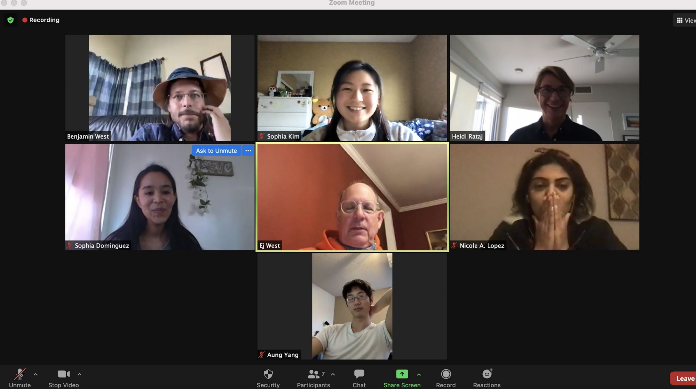
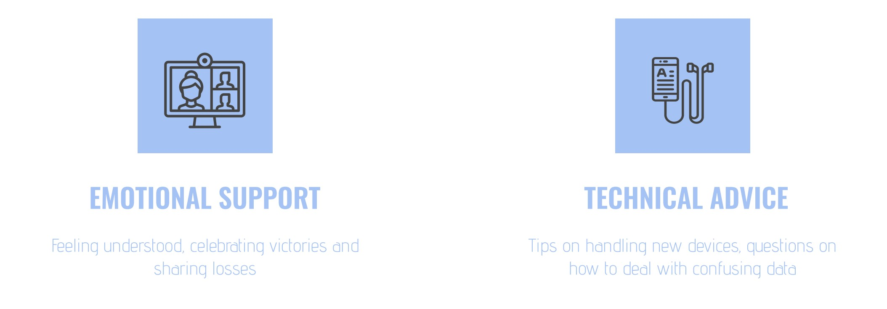
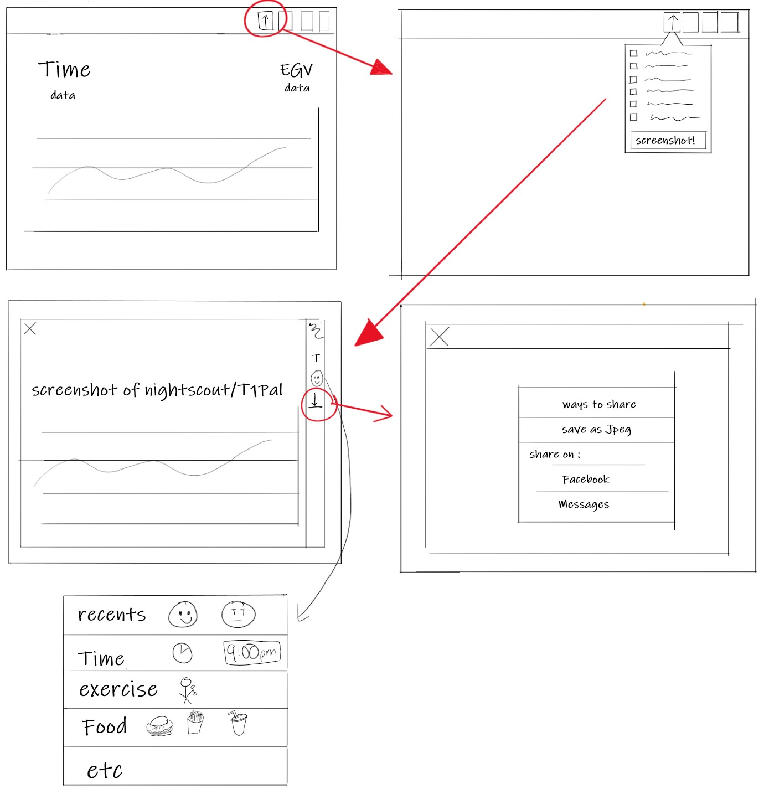
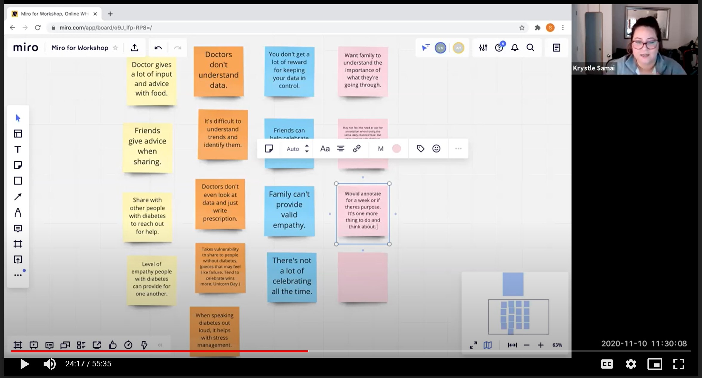

T1 Pal Design Intern
Overview:
Over the course of 10 weeks, I managed a team of 4 students and together we worked to redesign the sharing feature within T1Pal. We focused on creating a solution to empower people with Diabetes by changing how data is shared, pushing data to be beyond numbers. We worked for 10 weeks to create a new sharing feature by conducting user interviews, creating wireframes, creating prototypes and testing them. We ran a design workshop and meet with the CEO for weekly feedback on our progress.
Timeline: Fall ‘20(10 weeks)
Team: Sophia Dominguez (Project manager and UX designer), Sophia Kim (UX designer and media), Nicole Lopez (UX Researcher), Aung Yang (User Testing)
Mentors: Lars Mueller, and Heidi Rataj

The Problem:
People with diabetes are actively engaged in online communities to share their experience through data. Currently, there are not enough resources or tools to support the online community in facilitating positive discussion amongst peers.
Why it Matters:
Currently there are 34.2 million Americans, almost 1 in 10 Americans affected by diabetes.
And for this extremely large audience, sharing their experience with loved ones and the online community plays a huge role in coping with their life-long journey with the disease. Just on Facebook alone, there are well over 50,000 people engaged with these diabetes communities.
User Research:
We conducted a series of user interviews to why people share. Our goal was to get a better understanding on what is missing from the sharing experience to create a feature that better serves the communities needs. We mainly focused on peer to peer sharing.
We found 2 main reasons why people share:

“I just think the support you get from people with type 1 cannot be replicated by your doctor”
Users shared for emotional support because people without diabetes can't interpret the data. They do not get the empathy they desire from their loves ones or their doctors. They like to share their wins and loses and the online communites give them a space to feel understood.

Secondary Research:
Looking through social media groups and posts, we found some common cases on why people post. On Twitter, people posted because to show their success or posted screenshots to explain a funny relatable moment. On Facebook, we found that many people posted and shared data asking for advice or to share their wins. This aligned with what we found in our user interviews.

Wireframes
Problem:
People with diabetes want empathy and understanding from those they share their data with.
Need:
A way to encourage peer to peer sharing when sharing data.
Opportunity:
An annotation feature within T1Pal that would allow users to be in control of how they potray their data.
How Might We:
How might we develop tools that empower PWD’s to share their experience with their peers?
After conducting user research and gaining new insights, we narrowed down our project scope. We wanted to focus on creating a better oline sharing experience through T1Pal.
Solution:
A feature that allows users to customize their Nightscout screenshot with annoattion & a sticker pack
Why?????
1. Space for PWD’s to express and explain themselves.
2. Faviliatates helpful feedback, support, and dscussions.

I created our original wireframes on the desktop version. After speaking with the CEO, we changed our prototypes to mobile versions. While our research supported designing for a desktop version, the data T1Pal had supported a mobile first version. We took the same idea presented and contingued with mobile prototypes.
Potential Versions
Sophia K. and I created different versions of the same features and tested them. We got an overwhelming amount of support to the version on the bottom. We also tested if a filtering feature before creating a screenshot was needed. We also got a lot of support for that feature and incorporated it into our final prototype.
Prototype
For an interactive prototype, click here
User Testing and Feedback
Design Workshop
We conducted several user tests and a design workshop to get feedback on our prototype and solution. In our design workshop, we presented our solution early on to some Nightscout users to understand why they share and feedback on our solution. Overall we got positive feedback and encouragement to keep going forward with our annotating and sticker solution.

Potential Versions
From conducting user tests, we were able to get feedback on certain features. We learned our users wanted a streamline easy process. The less decisions they had to make the better. We also tested our stickers and asked for more sticker ideas. The feedback we received helped us make changes to our prototype to create a better product to serve our users.
What I learned
As a project manager, I learned how to delegate work, support my team members, and let others led where they are strongest. As a project manager, I learned my role was to do more than schedule meetings and represent my team, I learned to ask my team members “How can I help you or support you?” And what I got was responses asking me to help them in certain skills. Helping my teammates grow in areas they needed help in benefited my team members and the team overall. I also encouraged others to take lead in areas they excel. It allowed me to delegate big tasks to others build my team’s self confidence in their own skills.